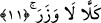
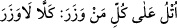
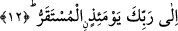

Sa’dî Müftî’nin ifâdesine göre bu sözü gerçek anlamına almamıza ve “kâfir
gerçekleri gördüğünde hayrete düştüğü için dünyadaki zannına göre böyle söylemiştir”
şeklinde yorum yapmamıza engel herhangi bir şey yoktur.
11. Hayır, hayır! (Kaçıp) sığınacak yer yoktur!
“Hayır hayır!” Bu söz kâfirin kaçmayı ve bunu temennî edişini reddir. Sa’dî
Müftî’nin ifâdesine göre kâfirin yukardaki ifâdeyi ümitsizliğe düşen bir insanın sözü
biçiminde söylemesi ve âyetin bu şekilde tefsir edilmesi uygun değildir. Çünkü o zaman
herhangi bir “talep” olmayacaktır. Sonra “kellâ/hayır” sözü Allah’ın sözüdür, yoksa o
kâfirin sözü değildir. Bâzı âlimlere göre bu “kellâ” insanın kendi kendine hitâben
söyleyecek olduğu bir ifâde biçimi olabilir. Ancak bu uzak bir ihtimaldir.
“Hiç bir sığınacak yer yoktur.” “Sığınma yeri” anlamına gelen “vezera” kelimesi
istiâre yoluyla “dağ” kelimesinden alınmıştır. Çünkü -Arapçada- “el-vezer” geçit
vermez yüce dağ anlamınadır. Önce bu anlama gelen kelime daha sonra insanın
kendisine sığındığı ve korunduğu herşeye isim olarak verilmeye başlanmıştır. Kelimenin
bu yapısına işâret için Zemahşeri’nin belağatından şöyle örnek bir cümle alalım: “
” yâni günahkâr olan herkese bu “kellâ lâ vezer” âyetini oku.
“Vezer” sığınak, dağ anlamına gelirken, “vizir” günah anlamınadır. Nitekim şâirin biri
bu kelimeyi beytinde kullanarak şöyle der:
Yemin ömrüne, gence yok -dostum- sığınak!
Yaşlanmak ve ölüm. Yok -karşısında- barınak.
Şâir demek istiyor ki ölüm ve yaşlanmaktan kaçıp sığınılacak herhangi bir sığınak
yoktur. Çünkü bunların her birisi emr-i ilâhîdir. Hükme bağlanmış bir olaydır ve takdir
edilmiş bir kaderdir. Bu kader hiç kuşkusuz insanı gelip bulacaktır.
12. O gün varıp durulacak yer, sâdece Rabbinin huzûrudur.
Yâni kulların karar kılacakları yer sâdece Allah Teâlâ’dır. Bir başka ifâdeyle; onlar
ancak Allah’ın kendilerine emir buyurduğu hesap makamına yönelebilirler. Bu âyete
şöyle bir mânâ vermek de mümkündür: “Onların işlerinin duracak olduğu son yer, Allah
Teâlâ’nın hükmüdür.” Çünkü mülk, saltanat o gün sâdece Allah’ındır. Bu âyet
“Kuşkusuz dönüş Rabbinedir.” (el-Alak, 96/8), “Ve şüphesiz en son varış
Rabbinedir.” (en-Necm, 53/42), “Siz de O’na döneceksiniz.” (Yâsin, 36/83) âyetleri